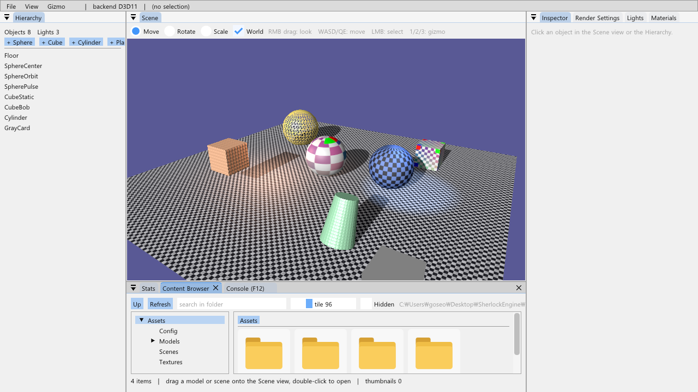
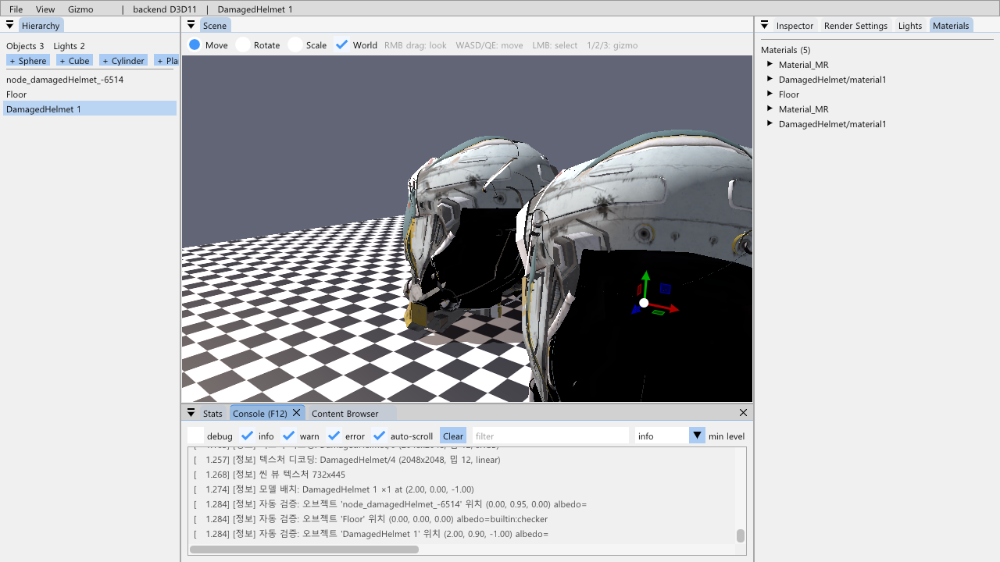
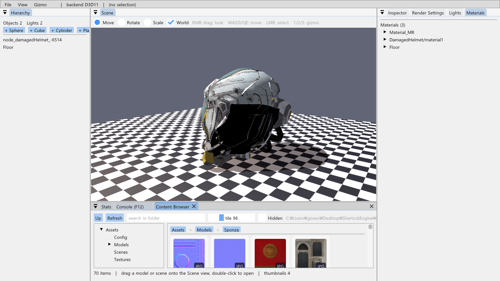
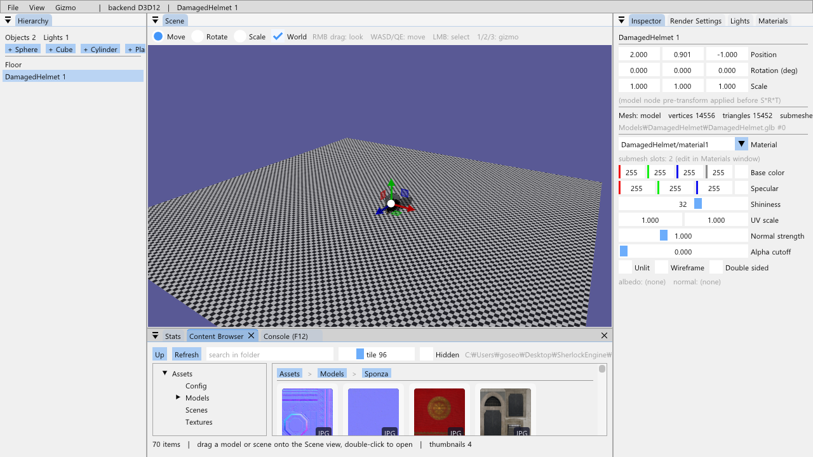
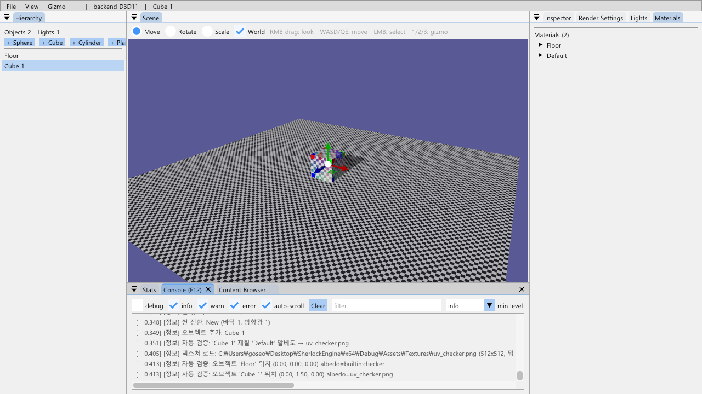
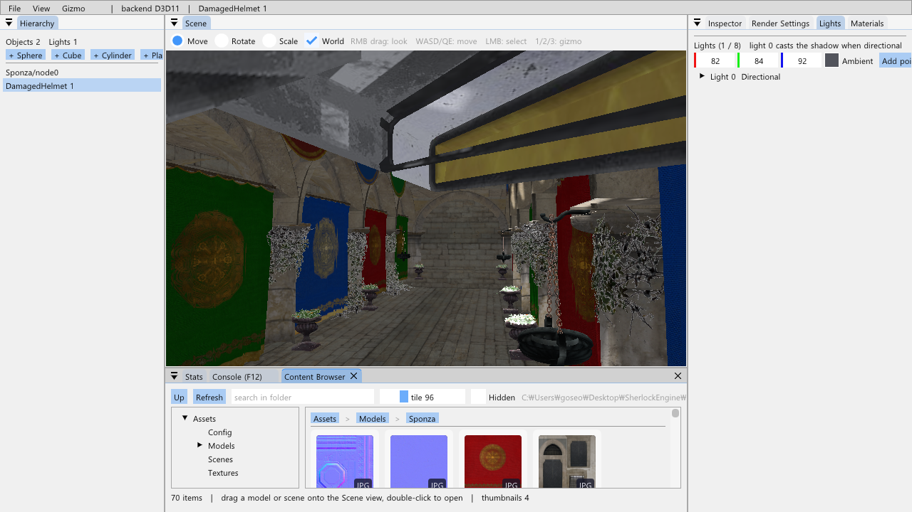

11-B단계 · 콘텐츠 브라우저와 드래그 앤 드롭
11단계 에디터에는 에셋을 보는 창이 없었습니다. 모델은 File 메뉴의 고정 항목으로만 불러오고 새 오브젝트는 원점에만 생겼습니다. 이 단계에서는 상용 엔진의 콘텐츠 브라우저처럼 Assets\ 폴더를 폴더 트리 + 타일 그리드로 보여 줍니다. 타일을 Scene 뷰로 끌어다 놓으면 모델은 커서 아래 표면(오브젝트 AABB 또는 바닥면)에 배치되고, 씬 파일은 로드되며, 오브젝트에 놓은 텍스처는 그 재질의 알베도가 됩니다.
브라우저는 파일 시스템을 읽기만 하고 GPU 자원은 썸네일뿐입니다. 드래그는 ImGui 의 drag & drop 페이로드(POD 구조체 하나)로 전달합니다. 드롭은 Scene 뷰 이미지 아이템의 BeginDragDropTarget 에서 받아 11단계의 선택 광선(Pick)을 그대로 써서 놓을 점을 구하고, 실제 배치는 11단계 콜백 규칙대로 앱(TestApp::PlaceModel)에 넘깁니다. 렌더러에서 바뀐 것은 asset: 텍스처 이름 한 줄뿐입니다.
1.요약
| 항목 | 구현 | 확인 |
|---|---|---|
| 콘텐츠 브라우저 창 | App/ContentBrowser: 툴바(Up·Refresh·검색·타일 크기·Hidden), 폴더 트리, 브레드크럼, 타일 그리드(ListClipper), 상태줄, 우클릭 메뉴(원점에 배치·씬 로드·경로 복사·탐색기), 더블클릭(폴더·씬·모델) | 그림 1·2 |
| 드래그 → Scene 뷰 드롭 | 페이로드 AssetDragPayload{type, relativePath[260]}, Scene 뷰 이미지 뒤 BeginDragDropTarget, 호버 중 고스트 마커(놓일 점 + 모델 AABB), 릴리스 프레임에 HandleAssetDrop | 자동 검증 A·C (9절) |
| 놓을 점 | Editor::RaycastScene: 광선이 오브젝트 AABB 에 맞으면 그 점, 아니면 y = 0 바닥면. 모델은 bounds.min.y 만큼 올려 바닥면이 닿게 | 헬멧 y = 0.90 (바닥), Sponza 표면 위 y = 2.49 |
| 텍스처 썸네일 | TextureLoader::LoadThumbnail(DirectXTex Resize, UNORM), 브라우저가 소유하는 텍스처 캐시, 보이는 타일만·프레임당 1장 | 그림 3 (Sponza 70장 폴더), Stats 의 렌더러 텍스처 수 불변 |
| 텍스처 이름 규칙 | Textures\x.png → "x.png"(기존), 그 밖은 "asset:<상대 경로>" — Renderer::GetOrLoadTexture 가 접두어를 푼다 | Sponza 이미지를 구에 드롭 (그림 5) |
| 두 백엔드 | Device 의 CreateTexture/DestroyTexture/GetImGuiTextureId 만 쓴다 | 그림 4 (D3D12) |
2.콘텐츠 브라우저 창
2.1 에셋 루트와 열거
Paths::GetAssetRoot() 가 새로 생겼습니다. 11단계 GetSceneDir() 과 같은 마커(exe\..\..\SherlockEngine\Assets\Config\engine.ini)로 소스 트리를 찾아 저장소의 Assets\ 를 보여 주고, 없으면(배포) exe\Assets\ 를 씁니다. 그래서 브라우저에서 보이는 파일이 곧 저장소의 파일이고, 브라우저가 놓은 모델 경로(Models\DamagedHelmet\DamagedHelmet.glb)는 AssetManager::GetModel 과 씬 파일의 MeshSource::modelPath 가 쓰는 상대 경로 그대로입니다.
열거에는 C++17 std::filesystem 을 쓰고, 예외를 던지지 않는 error_code 오버로드만 씁니다(정션·잠긴 파일·긴 경로). 정렬은 폴더가 먼저이고, 이름은 대소문자를 무시합니다. 라벨은 Log::ToUtf8 로 한 번만 변환해 둡니다(한글 경로). 분류는 확장자로: .gltf/.glb Model, .png/.jpg/.jpeg/.bmp/.dds/.tga Texture, Scenes\ 아래 .json Scene, 나머지 Other. .bin/.ini/.log 는 숨김이라 Sponza.bin·engine.ini 가 그리드를 어지럽히지 않습니다(Hidden 토글로 회색 표시). 폴더 수정 시각을 1초마다 비교하므로, 탐색기에서 파일을 넣으면 저절로 다시 읽습니다.
2.2 타일 그리드와 아이콘
타일 하나는 InvisibleButton 하나입니다 — 호버·클릭·더블클릭·드래그 소스·컨텍스트 메뉴가 전부 그 아이템에 붙고, 그림(배경·썸네일 또는 아이콘·확장자 배지·잘라낸 라벨)은 ImDrawList 로 그 위에 그립니다. 행은 ImGuiListClipper 로 보이는 것만 제출하므로 썸네일 요청도 보이는 타일에서만 나옵니다. 아이콘은 에셋 파일 없이 ImDrawList 도형으로 그립니다: 폴더(탭 + 몸통), 모델(등각 정육면체 세 면), 씬(문서 + 줄 + 작은 큐브), 텍스처 자리표시자(체커 4칸).
3.드래그 페이로드
// ImGui 가 memcpy 로 복사하므로 POD 고정 크기. 16B 를 넘으면 힙 버퍼에 복사되어 크기 제한은 사실상 없다 [1]
struct AssetDragPayload { AssetType type; wchar_t relativePath[260]; }; // ≈524 B
constexpr const char* kAssetPayloadType = "SHERLOCK_ASSET";
// 소스 (타일의 InvisibleButton 직후)
if (ImGui::BeginDragDropSource()) {
ImGui::SetDragDropPayload(kAssetPayloadType, &payload, sizeof(payload), ImGuiCond_Once);
/* 미리보기: 썸네일/아이콘 + 이름 + 타입 */
if (ImGui::IsKeyPressed(ImGuiKey_Escape)) m_dragCancelled = true; // ImGui 에는 Esc 취소가 없다
ImGui::EndDragDropSource(); }페이로드 타입 문자열 하나에 구조체 하나 — 받는 쪽은 type 으로 분기합니다. 절대 경로가 아니라 Assets 기준 상대 경로를 실어, 그대로 AssetManager·MeshSource·Paths::GetAssetPath 에 넘길 수 있습니다. 받는 쪽은 DataSize == sizeof(AssetDragPayload) 를 확인하고 마지막 문자를 0 으로 막습니다. 폴더·Other·260자 이상 경로는 드래그 소스를 만들지 않습니다.
4.Scene 뷰 드롭: 광선과 바닥면
드롭 타깃은 씬 뷰 ImGui::Image 아이템 바로 뒤(기즈모 앞)에 있어야 합니다. AcceptBeforeDelivery 플래그로 호버 중 매 프레임 페이로드를 받아 고스트 마커를 그리고, IsDelivery() 인 프레임(마우스 릴리스)에만 실제로 놓습니다.
if (ImGui::BeginDragDropTarget()) {
const ImGuiPayload* p = ImGui::AcceptDragDropPayload(kAssetPayloadType, AcceptBeforeDelivery | AcceptNoDrawDefaultRect);
if (p && p->DataSize == sizeof(AssetDragPayload) && !m_contentBrowser.IsDragCancelled()) {
u, v ← (mouse − imagePos) / size;
const int hitObject = RaycastScene(scene, camera, u, v, point); // AABB 히트점 또는 y=0 바닥
DrawDropGhost(...); // 테두리, 점·십자, 모델 AABB, 라벨
if (p->IsDelivery()) HandleAssetDrop(engine, callbacks, asset, point, hitObject);
}
ImGui::EndDragDropTarget(); }11단계의 Pick 은 픽셀→광선 변환이 함수 안에 들어 있었고 히트 거리를 돌려주지 않았습니다. 그 여섯 줄을 ScreenToRay(camera, u, v) 로 분리하고 Pick 에 float* outDistance 를 더했습니다(bestT 는 이미 월드 거리). RaycastScene 은 Pick 이 맞으면 origin + direction × t 를, 아니면 y = 0 평면과의 교점 t = −o.y / d.y(앞쪽일 때만)를, 둘 다 아니면(하늘을 보며 놓음) 광선 위 10 단위 점을 돌려줍니다. --drop-uv 자동 검증도 같은 함수를 씁니다.
고스트 마커는 히트점을 XMVector3Transform(Coord 가 아님 — w 를 남겨 카메라 뒤의 점을 거른다)으로 투영해 씬 뷰 좌표로 바꾸고, 점·바닥면 십자·라벨("DamagedHelmet → (x, y, z) on Floor")을 그립니다. 모델이면 AssetManager::IsModelCached 일 때만 놓일 자리의 AABB 12 모서리를 그립니다 — 호버 중에 GetModel 을 부르면 Sponza 를 몇 초 동안 파싱하게 됩니다. 드래그 중에는 ImGuizmo::Enable(false) 로 기즈모를 끄고, 클릭 선택도 건너뜁니다.
5.모델 배치: PlaceModel
에디터는 11단계 규칙대로 씬을 바꾸지 않고 콜백 Editor::Callbacks::placeModel(relativePath, position) 으로 앱에 넘깁니다. TestApp::PlaceModel 은 AddPrimitive 의 형제입니다.
const Model* model = assets.GetModel(relativePath); // 첫 드롭은 동기 파싱, 두 번째부터 캐시
Transform placement;
placement.SetPosition(position.x, position.y - model->bounds.min.y, position.z); // 바닥면이 놓은 점에 닿게 (9단계 헬멧 씬 규칙)
const size_t created = scene.AddModel(*model, placement); // 노드마다 GameObject, pre-transform = 노드 행렬
// 이름 "DamagedHelmet 1", 노드가 여럿이면 "Sponza 1/<노드>". 마지막 오브젝트 선택. 씬 모드는 그대로 (아래).씬 모드는 바꾸지 않습니다. 처음에는 AddPrimitive 처럼 Demo → File 로 바꿨는데, 그러면 데모 씬에 헬멧을 놓는 순간 OnUpdate 의 애니메이션(Demo 모드에서만 돈다)이 멈춥니다. 오브젝트를 끝에 추가하는 것은 애니메이션 인덱스(m_orbitSphere 등)를 건드리지 않으므로 모드를 전환할 이유가 없습니다. 인덱스를 밀어내는 것은 삭제뿐이므로 DeleteObject 에서만 File 로 바꿉니다. AddPrimitive 도 같은 이유로 모드를 유지하게 고쳤습니다.
Scene::AddModel(const Model&) 은 캐시 모델의 메시·재질·이미지를 복사합니다(10단계). 같은 모델을 두 번 놓으면 CPU 메시와 GPU 버퍼가 두 벌이 됩니다. 헬멧 두 개(그림 2)는 문제없지만, Sponza 를 여러 번 놓는 경우는 다음 단계의 메시 공유(12절)로 미룹니다. 저장 쪽은 바꿀 것이 없습니다 — MeshSource::FromModel(path, index) 가 이미 경로로 저장하고, 로드할 때 AssetManager 에서 다시 받습니다(자동 검증 B).
6.텍스처 썸네일
// TextureLoader::LoadThumbnail — 밉 0 만, 긴 변이 maxSize 를 넘으면 DirectXTex Resize [2], 블록 압축 DDS 는 Decompress 먼저
bool LoadThumbnail(const std::wstring& path, uint32_t maxSize, TextureImage& out); // srgb=false → R8G8B8A8_UNORM 라벨왜 UNORM 인가: 11단계 씬 뷰 텍스처와 같은 이유입니다. UI 패스는 백버퍼의 UNORM 뷰에 그리고 ImGui 는 픽셀을 그대로 옮기므로, 파일의 sRGB 바이트를 sRGB 라벨로 만들면 샘플할 때 선형으로 풀려 화면에서 두 번 인코딩되어 바랩니다. 밉맵도 만들지 않습니다(128px 를 96px 타일에 그리므로 축소비가 작다).
캐시는 브라우저가 소유합니다(상대 경로 → {TextureHandle, failed, lastUsedFrame}). 렌더러의 m_textureCache 에 넣지 않는 것은 Renderer::InvalidateScene(…, true) 가 씬을 바꿀 때마다 파일 텍스처를 전부 지우기 때문입니다. 타일이 처음 보이면 자리표시자를 넣고 큐에 올린 뒤, Draw 시작 시점에 프레임당 한 장만 디코딩합니다 — 2048² JPEG 디코드+축소가 10~30 ms 라 한 장씩이면 히치가 한 프레임에 그치고 Sponza 70장 폴더는 1초 남짓에 채워집니다. 스크롤로 사라진 타일은 큐에서 건너뛰고(다시 보이면 재요청), 상한 256 장(128² RGBA 64 KB × 256 = 16 MB)을 넘으면 오래 안 쓴 것부터 DestroyTexture 합니다 — D3D12 의 shader-visible SRV 힙(4096, GetImGuiTextureId 가 텍스처마다 하나 잡는다)도 그래서 안전합니다. 소멸자가 마지막 Draw 의 Device 로 전부 파괴합니다: ~TestApp(→ Editor → 브라우저)이 AppBase 의 Engine::Shutdown 보다 먼저 실행됩니다.
7.텍스처 드롭과 asset: 이름
재질의 텍스처는 5단계부터 Assets\Textures\ 기준 파일명("uv_checker.png")이었습니다. Sponza 의 이미지 70장은 Models\Sponza\ 에 있어 이 규칙으로는 못 씁니다. 그래서 Renderer::GetOrLoadTexture 의 파일 분기에 접두어 하나를 더했습니다:
const std::wstring path = name.rfind("asset:", 0) == 0
? Paths::GetAssetPath(ToWide(name.substr(6)).c_str()) // "asset:Models\Sponza\lion.png"
: Paths::GetAssetPath((L"Textures\\" + ToWide(name)).c_str()); // "uv_checker.png" (기존)ContentBrowser::ToMaterialTextureName 이 이 규칙에 따라 이름을 만듭니다: Textures\ 바로 아래면 파일명만(예전 씬 파일과 같은 형태), 아니면 asset: + 상대 경로. SceneSerializer 는 이름을 그대로 저장하므로 바꿀 것이 없고, 재질 이름이 바뀌면 GetOrCreateGpuMaterial 이 다음 프레임에 ResourceSet 을 다시 만드므로 무효화 호출도 없습니다. 드롭은 광선이 맞은 오브젝트의 재질 알베도에 들어갑니다. 재질은 공유될 수 있으므로(프리미티브의 "Default") 같은 재질을 쓰는 오브젝트가 함께 바뀌고, 이를 메뉴 바 메시지로 알립니다. 서브메시 슬롯 재질을 쓰는 모델 오브젝트는 material 이 그리기에 쓰이지 않으므로 드롭을 받지 않고 Materials 창으로 안내합니다.
8.도킹 배치와 imgui.ini
BuildDefaultLayout 은 "Content Browser" 를 Console/Stats 와 같은 하단 노드에 넣고, 3 프레임 동안 SetWindowFocus 를 불러 활성 탭으로 만듭니다(첫 프레임에는 뒤에 처음 나타나는 Console 창이 포커스를 가져가므로 한 프레임으로는 부족합니다). 문제는 저장소에서 추적 중인 SherlockEngine\imgui.ini 입니다 — 11단계 레이아웃이 들어 있고 이 창의 항목이 없어서, 그대로 두면 새 창이 도킹되지 않고 떠다닙니다. 두 가지로 해결했습니다: (1) DrawContentBrowser 가 FindWindowByName("Stats")->DockId 로 SetNextWindowDockID(…, ImGuiCond_FirstUseEver) 를 걸어 ini 에 항목이 없는 첫 실행에 Stats 옆 탭으로 붙입니다(항목이 생긴 뒤에는 사용자가 옮긴 자리를 존중), (2) 추적 중인 ini 에 [Window][Content Browser] DockId=0x00000006,1 블록을 넣었습니다. 도킹 공간 ID 는 바꾸지 않았습니다 — 바꾸면 모든 사용자의 노드 트리가 버려집니다.
9.자동 검증
11단계의 실행 인자 방식 그대로입니다. 새 인자는 씬 뷰 드롭과 같은 코드 경로(PlaceModel, RaycastScene, ToMaterialTextureName)를 지납니다.
# A: 새 씬, 헬멧을 (2, 0, −1) 에 드롭 → 이름·위치 덤프 → 저장 → 스크린샷
SherlockEngine.exe --exit-after=40 --new-scene=1 "--drop=Models\DamagedHelmet\DamagedHelmet.glb;2,0,-1" --dump-objects=1 --save=drop_helmet.json --screenshot=...
# B: 재시작해서 로드 → 같은 이름·위치 (2, 0.90, −1)
SherlockEngine.exe --exit-after=30 --load=drop_helmet.json --dump-objects=1
# C: 씬 뷰 (0.5, 0.5) 광선의 히트점에 드롭 (바닥면 또는 Sponza 표면)
SherlockEngine.exe --exit-after=30 --new-scene=1 "--drop=Models\DamagedHelmet\DamagedHelmet.glb;0,0,0" --drop-uv=0.5,0.5 --dump-objects=1
# D: 선택 오브젝트 재질 알베도 ← 텍스처 (Textures\ 규칙 / asset: 규칙)
SherlockEngine.exe --exit-after=30 --new-scene=1 --add=1 "--drop-texture=Textures\uv_checker.png" --dump-objects=1
SherlockEngine.exe --exit-after=30 --new-scene=1 --add=0 "--drop-texture=Models\Sponza\16275776544635328252.png" --dump-objects=1
# E: 브라우저를 폴더로 이동해 활성 탭으로 → 썸네일이 채워진 뒤 스크린샷. --backend=d3d12 로 같은 것
SherlockEngine.exe --exit-after=150 --scene=helmet "--browse=Models\Sponza" --screenshot=...10.함정과 해결
- 드래그 중
IsItemHovered()는 false. ImGui 는 활성 소스 아이템이 있는 동안 다른 아이템의 호버를 막습니다. 그래서m_sceneHovered가 드래그 중 저절로 false 가 되어 RMB 카메라 룩은 시작되지 않지만, 드롭 판정을 호버에 걸면 절대 성립하지 않습니다 —BeginDragDropTarget/AcceptDragDropPayload만이 소스를 뚫고 봅니다. 카메라 쪽에는IsAssetDragActive()검사를 명시해 두었습니다(IsDragDropActive는 internal 이라GetDragDropPayload()로 판단). - Esc 취소가 없다. ImGui 에는 드래그 취소 키가 없습니다. 소스에서 Esc 를 보고 플래그를 세우고, 타깃은 그 플래그가 참이면 받지 않으며, 마우스를 놓으면 플래그가 풀립니다.
- 마지막 아이템 ID.
BeginDragDropSource·BeginPopupContextItem은 "마지막 아이템" 을 씁니다. 툴팁 창(SetTooltip)이 그것을 바꾸므로 순서는 InvisibleButton → 드래그 소스 → 컨텍스트 메뉴 → 툴팁. - 첫 프레임 포커스. 8절. 같은 프레임에 뒤에서 처음 나타난 창이 포커스를 가져간다. 3 프레임 반복.
- 썸네일 색공간. 6절. sRGB 라벨을 붙이면 UNORM 백버퍼 뷰에서 두 번 인코딩된다. UNORM 으로.
- 호버 중 모델 파싱. 4절. AABB 고스트는
IsModelCached일 때만. 첫 드롭의 동기 파싱(Sponza 수 초)은 이번 범위에서 그대로 두고 로그로 알린다. GetAssetPath는 exe 사본 우선. 브라우저는 소스 트리를 보여 주지만 로드는 exe 옆 사본이 먼저다. 소스 트리에서 수정한 파일은 다음 빌드(CopyAssets)까지 옛 것이 읽히고, 추가한 파일은 폴백으로 바로 보인다.Paths.h주석에 적어 두었다.- MSYS 인자 변환. Git Bash 에서
msbuild /p:Configuration=Debug의/p:가 경로로 바뀌어 "프로젝트를 하나만 지정할 수 있습니다" 오류가 났다. PowerShell 로 빌드한다.
11.검증과 스크린샷
- 완료 기준 "브라우저의 모델을 Scene 뷰에 끌어다 놓으면 커서 아래에 놓이고, 저장한 씬을 다시 불러오면 그 자리에 있다" — A: 로그 "모델 배치: DamagedHelmet 1 ×1 at (2.00, 0.00, −1.00)", 덤프
DamagedHelmet 1위치 (2.00, 0.90, −1.00) = 놓은 점 + (−bounds.min.y 0.90),Assets\Scenes\drop_helmet.json저장(오브젝트 2, 메시 2, 재질 3). B: 새 프로세스 로드 → 같은 이름·위치 복원. - C (바닥면): 새 씬, (0.5, 0.5) → 히트 (−2.57, 0.00, 4.00) Floor, 배치 y = 0.90. C (오브젝트 표면, Release Sponza): (0.5, 0.6) → 히트 (6.11, 1.59, 1.39)
Sponza/node0, 배치 y = 2.49 — 헬멧이 Sponza 바닥 위에 선다 (그림 6). - D: 큐브 재질 "Default" 알베도 →
uv_checker.png, 텍스처 로드 로그Assets\Textures\uv_checker.png(그림 5 왼쪽 규칙). 구 재질 알베도 →asset:Models\Sponza\16275776544635328252.png, 로드 로그Assets\Models\Sponza\…png (1024x1024)— 접두어 분기 확인. - E: Sponza 폴더 70 items, 보이는 타일 4장만 썸네일 로드("thumbnails 4"), 렌더러 텍스처 수 불변. D3D11·D3D12 같은 화면 (그림 3·4). Debug Layer 메시지 0 (종료 시 Live Device Refcount 3 은 1단계부터 있던 것).
- 기본 배치:
imgui.ini없이 실행 → 새 ini 에[Window][Content Browser] DockId=0x00000006,1(하단 노드). 추적 중인 ini 에도 같은 블록 추가. - Debug·Release 빌드 경고 0, 오류 0. 새 파일
App/ContentBrowser.h/.cpp를 vcxproj·filters 에 추가.


DamagedHelmet.glb 를 (2, 0, −1) 에 드롭한 뒤. 새 오브젝트 "DamagedHelmet 1" 이 바닥 위(y = 0.90)에 서고 선택된다. 메시·재질은 복사되어 Materials 가 5개.


uv_checker.png 가 됐다. 콘솔에 이름 규칙과 텍스처 로드 로그.
12.다음 단계
- 메시 공유.
Scene::AddModel이 드롭마다 복사한다.MeshSource(경로 + 인덱스)로 같은 메시를 씬 안에서 재사용하면 같은 모델 N 개가 GPU 버퍼 한 벌이 된다 — 12단계 인스턴싱의 전제이기도 하다. - 비동기 로드. 첫 드롭의 동기 파싱(Sponza 수 초). 스레드에서 파싱해 자리표시자를 먼저 놓는다.
- Hierarchy·Inspector 드롭, 브라우저 안 파일 이동, 모델 썸네일(오프스크린 렌더). 이번 범위에서 뺀 것. 페이로드와
HandleAssetDrop이 그대로 쓰인다. - 되돌리기(Undo). 드롭·삭제·기즈모 편집이 모두 즉시 적용된다. 명령 스택이 필요해지는 첫 지점.
13.참고 문헌
- Dear ImGui, imgui.h — Drag and Drop — BeginDragDropSource/SetDragDropPayload(힙 복사)/BeginDragDropTarget/AcceptDragDropPayload, ImGuiDragDropFlags_AcceptBeforeDelivery·AcceptNoDrawDefaultRect, ImGuiPayload::IsDelivery. github.com/ocornut/imgui/blob/master/imgui.h
- Microsoft, DirectXTex — Resize / Decompress — 이미지 축소 필터와 블록 압축 해제. github.com/microsoft/DirectXTex/wiki/Resize
- cppreference, std::filesystem::directory_iterator — error_code 오버로드. en.cppreference.com/w/cpp/filesystem/directory_iterator
- Dear ImGui Wiki, Docking — SetNextWindowDockID, ImGuiCond_FirstUseEver, DockBuilder. github.com/ocornut/imgui/wiki/Docking
- Dear ImGui, ImGuiListClipper — 보이는 행만 제출. imgui.h